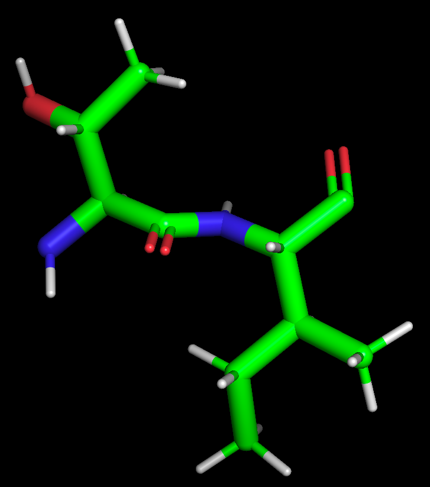
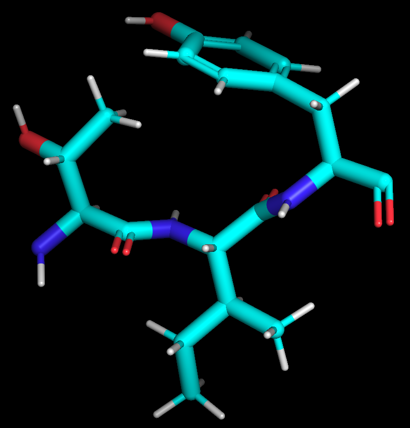
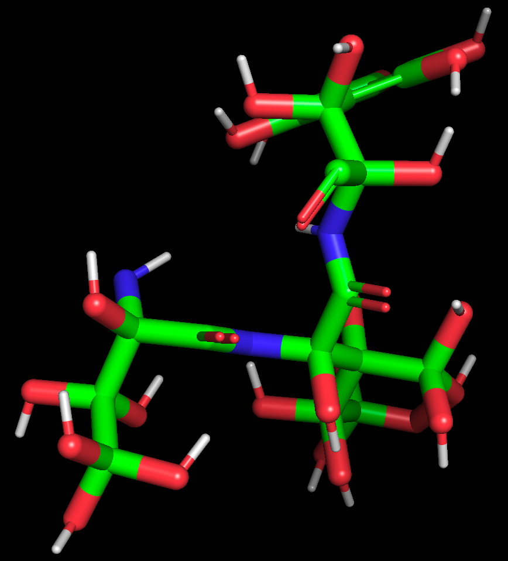
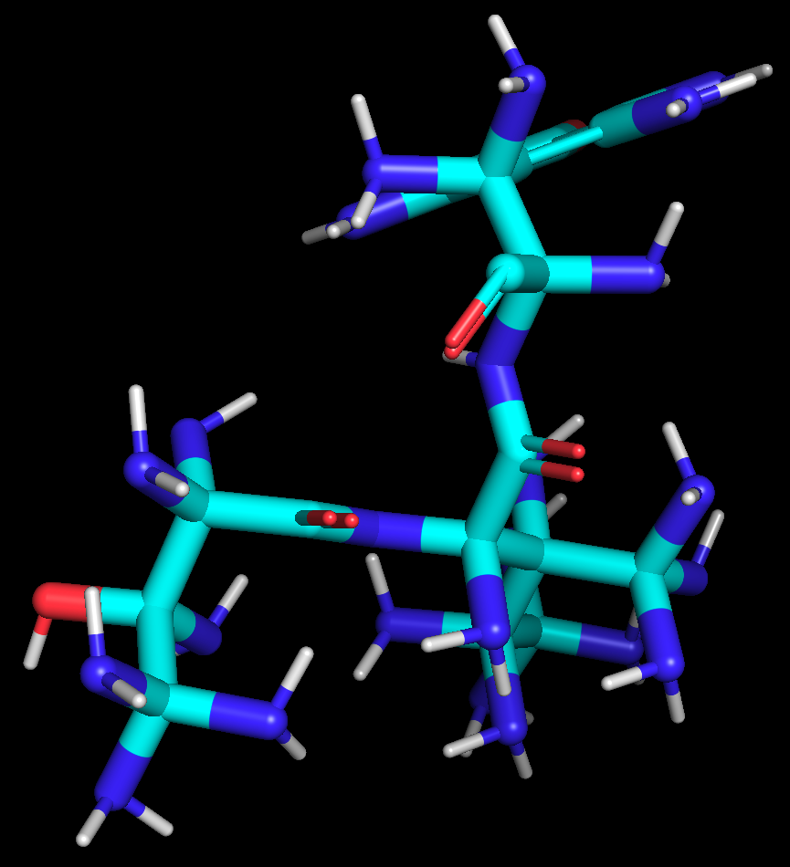

Small Molecule PCDH1 Inhibitor Design
In Silico Design of a Small Molecule PCDH1 Inhibitor to Combat Andes Orthohantavirus Infection
Project Motivation
The Andes orthohantavirus (ANDV) is a strain of hantavirus responsible for Hantavirus Cardiopulmonary Syndrome (HCPS), a severe respiratory disease with a mortality rate estimated between 35–50%. Despite its high lethality, there are currently no FDA-approved therapeutics specifically targeting ANDV infection.
This project explored the feasibility of designing a small molecule inhibitor targeting Protocadherin-1 (PCDH1), a host receptor implicated in ANDV cell entry. By computationally mimicking aspects of the ANDV–PCDH1 interaction, this work aimed to identify candidate molecules capable of disrupting viral binding through molecular docking and structural analysis approaches.
My Role
This was an independent research project conducted under the mentorship of Dr. Cian Desai through the Polygence research program.
My work focused on literature review and background research, molecular construction and structure modification, molecular docking and conformational analysis, data analysis and candidate evaluation.
Approach
A computational workflow was developed to evaluate candidate inhibitor molecules and their potential interactions with PCDH1. Molecules were constructed and modified using PyMOL, while structural analysis and visualization were performed using UCSF ChimeraX and ChemDoodle.
Identification of Candidate Binding Motifs
Candidate molecular backbones were designed around predicted 2–3 amino acid binding domains involved in the ANDV–PCDH1 interaction.
Functional Group Optimization
Oxygen- and nitrogen-containing substitutions were introduced and evaluated to assess their impact on predicted intermolecular interactions and conformational stability.
Drug-Likeness Optimization
Additional structural modifications were introduced while considering Lipinski’s Rule of Five to maintain properties consistent with oral drug-likeness.
MHC-II Binding Prediction
Candidate compounds were evaluated based on: 1) molecular weight, 2) predicted LogP, 3) post-docking conformation changes, 4) putative receptor–ligand interactions, and 5) δG binding affinities.
Results
The computational screen evaluated approximately 30 candidate compounds, of which 11 demonstrated favorable docking or conformational characteristics warranting further investigation.
| Highest ΔG | -5.3 |  |
| Molecular Weight | 214.2615 | |
| LogP | 0.513 |
Figure 1. GC ANDV glycoprotein n-terminus threonine-isoleucine (TI) peptide analog used to verify rudimentary framework of antagonist compound.
| Highest ΔG | -5.7 |  |
| Molecular Weight | 377.4348 | |
| LogP | 1.996 |
Figure 2. GC ANDV glycoprotein n-terminus threonine-isoleucine-tyrosine (TIY) peptide analog used to verify rudimentary framework of antagonist compound. As it's ΔG is stronger the 3-amino acid analog was used in subsequent constructs.
| Highest ΔG | -6.3 |  |
| Molecular Weight | 729.4216 | |
| LogP | -17.045 |
Figure 3. A TIY peptide analog with all available atoms as oxygens.
| Highest ΔG | -6.2 |  |
| Molecular Weight | 707.7569 | |
| LogP | -17.755 |
Figure 4. A TIY peptide analog with all available atoms as nitrogens.
| Construct | ΔG | Molecular Weight | LogP |
|---|---|---|---|
| Construct 8 | -5.9 | 381.397 | 2.601 |
| Construct 9 | -6 | 413.3958 | 1.558 |
| Construct 10 | -6.4 | 413.3958 | 1.248 |
| Construct 12 | -6.3 | 413.3958 | 0.744 |
| Construct 13 | -6.1 | 413.3958 | 1.285 |
| Construct 14 | -6 | 413.3958 | 1.054 |
| Construct 17 | -5.9 | 413.3958 | 1.054 |
| Construct 22 | -6.2 | 397.3964 | 1.099 |
| Construct 24 | -6.5 | 413.3958 | 0.069 |
| Construct 25 | -6.3 | 413.3958 | 0.152 |
| Construct 28 | -5.8 | 408.472 | -0.733 |
Figure 5. Table summarizing ΔG binding affinity, molecular weight, and LogP of successful constructs.
| Row 1, Col 1 | Row 1, Col 2 |  |
| Row 2, Col 1 | Row 2, Col 2 | |
| Row 3, Col 1 | Row 3, Col 2 |
Figure 6. Candidate compound with strongest in silico affinity to PCDH1. Conformational change indicated by blue in structure.
More figures can be found in the paper linked at the end of the page.
Discussion & Limitations
This work represents a small-scale pilot study compared to traditional high-throughput drug discovery pipelines, which often screen libraries containing tens of thousands of compounds. Howevere, the identification of multiple promising candidates from a limited set of molecules suggests that additional viable inhibitors may exist within broader chemical space.
Several limitations are important to acknowledge. First, in silico docking approaches provide only an approximation of molecular behavior and cannot directly predict therapeutic efficacy or potency. Additionally, evaluating receptor–ligand interactions primarily through conformational change offers an incomplete representation of the biological system, particularly because these simulations do not fully account for membrane anchoring effects, intracellular signaling interactions, or dynamic cellular environments.
Another major consideration is the potential for off-target effects. Because PCDH1 plays roles in cellular adhesion and tissue organization, systemic inhibition may produce unintended physiological consequences. Ultimately, extensive in vitro and in vivo validation would be required to evaluate binding specificity, toxicity, pharmacokinetics, absorption and metabolism, and therapeutic efficacy.
Future Directions
Future work should begin with expanded in silico screening across a substantially larger compound library to identify additional high-affinity candidates. From there, high-throughput screening (HTS) and experimental validation assays could be used to prioritize molecules for deeper characterization. These would include cell-based viral inhibition assays, toxicity and off-target evaluation, animal model testing, and pharmacokinetic evaluation.
Because HCPS remains a relatively rare disease, clinical translation may also face logistical challenges related to trial enrollment and therapeutic development incentives.
Reflection
This project introduced me to the growing role of computational tools in therapeutic discovery and gave me hands-on experience navigating molecular modeling workflows. More importantly, it taught me to critically evaluate the limitations of computational biology methods and to avoid overstating biological conclusions from purely in silico results.
Through this experience, I developed a greater appreciation for the balance between computational prediction and experimental validation in modern drug development.
Selected References
- Centers for Disease Control and Prevention (2024). About Hantavirus
- Kim, W. K. et al. (2016). Genetic diversity and reassortment of Hantaan virus tripartite RNA genomes in nature, the Republic of Korea. DOI
- Liu, X. et al. (2020). Vaccine and Therapeutics against Hantaviruses. DOI
- Ramsden, C. et al. (2008). High Rates of Molecular Evolution in Hantaviruses. DOI